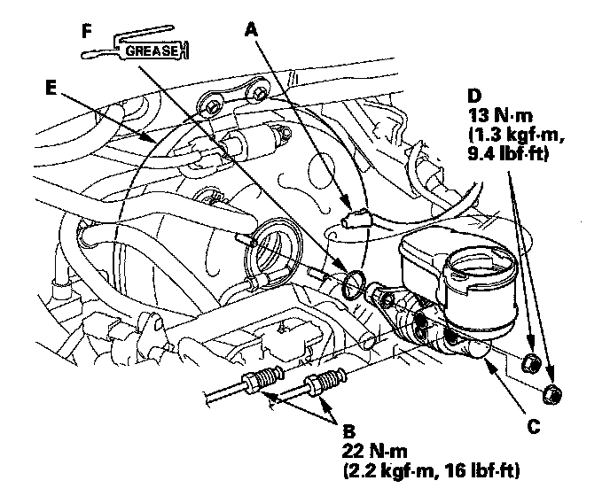

Brake Master Cylinder: Service and Repair
Master Cylinder ReplacementNOTICE:
^ Do not spill brake fluid on the vehicle; it may damage the paint; if brake fluid gets on the paint, wash it off immediately with water.
^ Be careful not to damage or deform the brake lines during removal and installation.
^ To prevent the brake fluid from flowing, plug and cover the hose ends and joints with a shop towel or equivalent.
1. Open the air cleaner housing cover.
2. Remove the reservoir cap and the brake fluid from the master cylinder reservoir with a syringe.
3. Disconnect the brake fluid level switch connector (A).

4. Disconnect the brake lines (B) from the master cylinder (C). To prevent spills, cover the hose joints with rags or shop towels.
5. Remove the master cylinder mounting nuts (D).
6. Remove the master cylinder from the brake booster Be careful not to bend or damage the brake lines when removing the master cylinder.
7. Remove the O-ring (F) from the master cylinder.
NOTE: Replace the O-ring whenever the master cylinder is removed.
8. Install the master cylinder in the reverse order of removal, and note these items:
^ Check the brake booster pushrod clearance.
^ Coat the new O-ring with silicone oil (Shin-Etsu KF 54).
^ Check the brake pedal height and free play after installing the master cylinder, and adjust it if necessary.
9. Bleed the brake system.
10. Spin the wheels to check for brake drag.